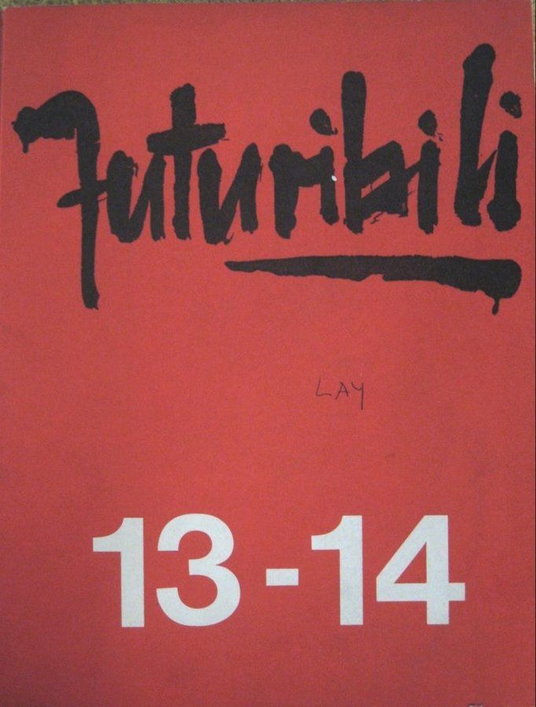

Storia del Pensiero Sistemico · Lab di Storia per i Sistemi Alimentari
Progettare futuri
Dal design speculativo al Transition Design
Due tradizioni progettuali lavorano sul futuro in modi diversi. Il design speculativo apre il dibattito su quali futuri vogliamo. Il Transition Design lavora su come arrivarci, nei tempi lunghi e dentro sistemi complessi.
Premessa · Futures studies in breve
Il futuro diventa materia di progetto
Con i futuribles di De Jouvenel il futuro diventa plurale. Nel 1972 The Limits to Growth mostra con gli scenari che il futuro dipende dalle scelte di oggi.
Il cono dei futuri distingue possibile, plausibile, probabile e preferibile: è nel preferibile che entra il design.
Cronologia
Sessant'anni di futuri progettati
- 1966Nascono Superstudio e Archizoom
- 1967Futuribili: designer e futurologi
- 1972The Limits to Growth
- 1999Dunne, Hertzian Tales
- 2009Fry, Design Futuring; Bleecker, design fiction
- 2013Speculative Everything, United Micro Kingdoms
- 2015Transition Design a Carnegie Mellon
- 2016Three Horizons, Sharpe et al.
- 2017Candy e Dunagan, experiential futures
- 2018Escobar, Designs for the Pluriverse
- 2025Dunne e Raby, Not Here, Not Now
- 2026Wong et al. e Lockton: speculativo e sistemico insieme
Parte 1
Design speculativo
Rendere i futuri tangibili, per discuterli.
Anni sessanta e settanta · Le radici
Il progetto come critica
Superstudio e Archizoom, a Firenze dal 1966, usano il progetto per criticare il presente e immaginare altri mondi possibili.
Nella rivista di Pietro Ferraro, Gui Bonsiepe e Giulio Carlo Argan discutono di futuro accanto ai futurologi: il design è già al tavolo.

Dunne e Raby · Royal College of Art
Dal design affermativo al design critico
Con Hertzian Tales (1999) Anthony Dunne introduce il critical design: oggetti che interrogano la tecnologia invece di renderla solo più desiderabile. Il manifesto A/B, con Fiona Raby, mette a confronto due modi di intendere il progetto.
| A · affermativo | B · critico |
|---|---|
| Risolve problemi | Trova problemi |
| Dà risposte | Pone domande |
| Progetto per la produzione | Progetto per il dibattito |
| Fantascienza | Finzione sociale |
| Applicazioni | Implicazioni |
| Ci fa comprare | Ci fa pensare |
Coppie scelte dal manifesto A/B, Dunne e Raby, Speculative Everything (2013).
2013 · Speculative Everything
Il design speculativo è una posizione, non un metodo: artefatti che incarnano valori alternativi per chiederci quali futuri vogliamo, e per chi.
Tra plausibile e preferibile
Lontano dal probabile su cui lavora il design di mercato.
United Micro Kingdoms
Design Museum, 2013: un'Inghilterra divisa in quattro società, ciascuna con tecnologie e valori propri.
Pratiche affini
Far vivere il futuro
Design fiction
Julian Bleecker: prototipi diegetici, oggetti che rendono credibile un mondo narrativo.
Experiential futures
Stuart Candy e Jake Dunagan: situazioni immersive che colmano il divario tra scenari astratti e vita vissuta.
Oltre il futuro
Superflux lavora su ecologia e più-che-umano; con Not Here, Not Now Dunne e Raby guardano a ciò che non è qui e non è ora.
Un ponte con i futures studies: The Thing from the Future, il gioco di carte di Stuart Candy per immaginare oggetti dal futuro, usato anche nei laboratori UNESCO.
Le critiche
Futuri di chi?
I futuri non sono una vetrina tra cui scegliere, ma processi di trasformazione da costruire.
Il design speculativo rischia di proiettare nel futuro i privilegi di uno sguardo occidentale.
Il pluriverso: molti mondi, molti modi di progettare.
La spinta verso futuri immaginati con le comunità, radicati nei sistemi reali.
Parte 2
Transition Design
Progettare le transizioni dei sistemi, nei tempi lunghi.
Le radici · Tony Fry, Design Futuring, 2009
Defuturing e pratica redirettiva
Defuturing
L'insostenibile consuma i futuriLo sviluppo insostenibile riduce attivamente i futuri possibili.
Redirezione
Il design riorientaIl progetto cambia direzione a pratiche, sistemi e abitudini, invece di ottimizzarli.
Sustainment
Sostenere il futuroNon sostenere lo stato delle cose, ma la possibilità stessa di un futuro.
Fry distingue la Sustainment da una sostenibilità che finisce per sostenere l'insostenibile. Nel 2026 ha pubblicato Contrapractice: Action Against Defuturing.
Carnegie Mellon · 2015
Il framework
Terry Irwin, Gideon Kossoff e Cameron Tonkinwise propongono il Transition Design come nuovo ambito di pratica e ricerca.
Quattro aree che si rafforzano a vicenda: cambiare una cambia le altre.
Il processo
Riformulare, intervenire, osservare
Mappare il problema complesso e gli attori, con paure e speranze. Costruire una visione condivisa a lungo termine e procedere a ritroso con il backcasting.
Progettare ecologie di interventi, non soluzioni singole, poi osservare come risponde il sistema e correggere la rotta.
Uno strumento chiave
Three Horizons
Sharpe e colleghi (2016) leggono la transizione come compresenza di tre orizzonti: il sistema dominante che declina, le innovazioni di passaggio, i semi del futuro.
Aiuta a riconoscere che cosa sostenere e che cosa lasciar andare.
Parte 3 · Insieme
Immaginare e trasformare
La speculazione apre l'immaginazione, la transizione la ancora ai sistemi reali.
Ponti
Speculativo e sistemico, insieme
Un vocabolario per le visioni nel design per le transizioni.
Immaginare futuri desiderati dentro il processo sistemico.
Systemic Futures Dialogue: metodi speculativi e sistemici tra micro e macro, presente e futuro.
Probe speculativi per chiedere che cosa scomparirà nelle transizioni.
Casi · Sistemi alimentari
Futuri del cibo, oggi
FixOurFood
Un ampio processo Three Horizons contrappone il sistema alimentare attuale, "degenerativo", a uno rigenerativo e individua sei aree d'azione.
Orti urbani
Design speculativo partecipativo con una comunità di coltivatori: mappe, camminate, giochi e making per immaginare la sovranità alimentare.
Per la discussione
Se doveste progettare la transizione del sistema alimentare del vostro territorio, quale futuro rendereste visibile per primo, e a chi lo mostrereste?
Esercizio
Immaginate un oggetto dal 2050 che racconti come è cambiato un elemento del sistema alimentare locale, poi ricostruite a ritroso tre interventi che lo rendono possibile.
L'esercizio unisce i due approcci: l'oggetto dal futuro è design speculativo, la ricostruzione a ritroso degli interventi è backcasting, cioè Transition Design.
Per il laboratorio · Strumenti aperti
Tre kit da usare in aula
The Thing from the Future
Candy e Watson, Situation Lab. Carte gratuite da stampare per immaginare oggetti dal futuro: arco temporale, ambito, oggetto, stato d'animo.
New Metaphors
Imaginaries Lab, Lockton et al. 150 carte e schede per riformulare problemi e immaginare futuri, con una sessione dedicata alla sostenibilità.
Systemic Design Toolkit
Design Council: undici strumenti stampabili lungo le fasi del design sistemico. In alternativa il kit di Namahn e shiftN, con sette strumenti gratuiti.
Una sequenza possibile per l'esercizio: The Thing from the Future per generare l'oggetto dal 2050, poi una mappa degli attori e il backcasting con il Systemic Design Toolkit. Il corso di Speculative Design dell'Australian National University segue un percorso simile: Thing from the Future, carte archetipo, costruzione di mondi.
Per approfondire · Materiali didattici aperti
Come lo insegnano gli altri
| Risorsa | Perché è utile |
|---|---|
| Transition Design Seminar, Carnegie Mellon | Programma completo del seminario di Irwin, Kossoff e Tonkinwise, con letture |
| Irwin, Tonkinwise, Kossoff, Cuaderno 105, 2021 | Come il Transition Design entra nel curriculum, dalla triennale al dottorato |
| Candy, The Futures of Everyday Life, 2010 | La prima tesi di dottorato tra foresight e design |
| Bendor e Lupetti, Teaching speculative design, 2024 | Il design speculativo come pratica didattica critica, ad accesso aperto |
| Mazé, lezione ad Aalto, 2019 | Design e futures studies come pratica critica e politica |
| Atti RSD e DRS, 2021–2026 | Articoli aperti su design sistemico, transizioni e speculazione |
Riferimenti
Letture essenziali
Design speculativo e critico
- Dunne, Hertzian Tales, 1999
- Dunne e Raby, Speculative Everything, 2013
- Dunne e Raby, Not Here, Not Now, 2025
- Bleecker, Design Fiction, 2009
- Candy e Dunagan, The People Who Vanished, Futures, 2017
Transition Design
- Fry, Design Futuring, 2009
- Irwin, Transition Design, Design and Culture, 2015
- Irwin, Kossoff e Tonkinwise, Transition Design Provocation, 2015
- Sharpe et al., Three Horizons, Ecology and Society, 2016
- Jones e Van Ael, Design Journeys through Complex Systems, 2022
Critiche e contesto
- Tonkinwise, How We Intend to Future, 2014
- Escobar, Designs for the Pluriverse, 2018
- Voros, A generic foresight process framework, 2003
Ponti e casi
- Wong et al., Systemic Futures, DIS 2026
- Lockton, What Doesn't Have a Place in the Future?, 2026
- Buckton et al., FixOurFood, 2024